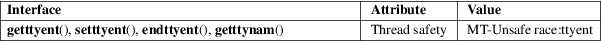

getttyent, getttynam, setttyent, endttyent − get ttys file entry
Standard C library (libc, −lc)
#include <ttyent.h>
struct
ttyent *getttyent(void);
struct ttyent *getttynam(const char
*name);
int
setttyent(void);
int endttyent(void);
These functions provide an interface to the file _PATH_TTYS (e.g., /etc/ttys).
The function setttyent() opens the file or rewinds it if already open.
The function endttyent() closes the file.
The function getttynam() searches for a given terminal name in the file. It returns a pointer to a ttyent structure (description below).
The function getttyent() opens the file _PATH_TTYS (if necessary) and returns the first entry. If the file is already open, the next entry. The ttyent structure has the form:
struct ttyent {
char *ty_name; /* terminal device name */
char *ty_getty; /* command to execute, usually getty */
char *ty_type; /* terminal type for termcap */
int ty_status; /* status flags */
char *ty_window; /* command to start up window manager */
char *ty_comment; /* comment field */
};
ty_status can be:
#define TTY_ON
0x01 /* enable logins (start ty_getty program) */
#define TTY_SECURE 0x02 /* allow UID 0 to login */
For an explanation of the terms used in this section, see attributes(7).

BSD.
Under Linux, the file /etc/ttys, and the functions described above, are not used.
ttyname(3), ttyslot(3)